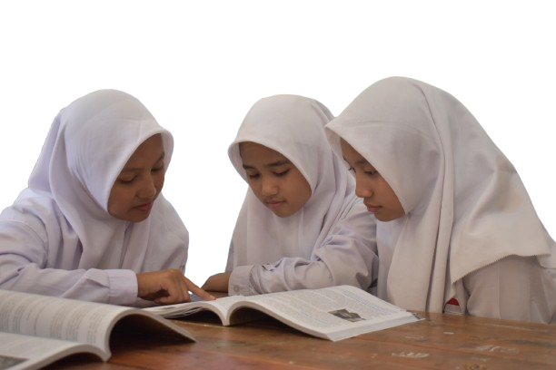
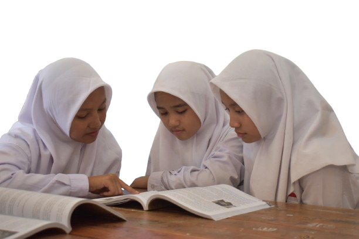

Kepala Sekolah

Kepala Sekolah SMK
Imam Marzuki S.Pd
Beliau memiliki pengalaman pendidikan yang mendalam dan komitmen tinggi untuk mengembangkan potensi siswa di SMK melalui inovasi dan pembelajaran berbasis industri.

Kepala Sekolah SMP
Suherman S.Pdi
Dengan pendekatan kepemimpinan yang inspiratif, beliau menciptakan lingkungan belajar yang kondusif dan mendukung perkembangan karakter serta akademik siswa.


 
